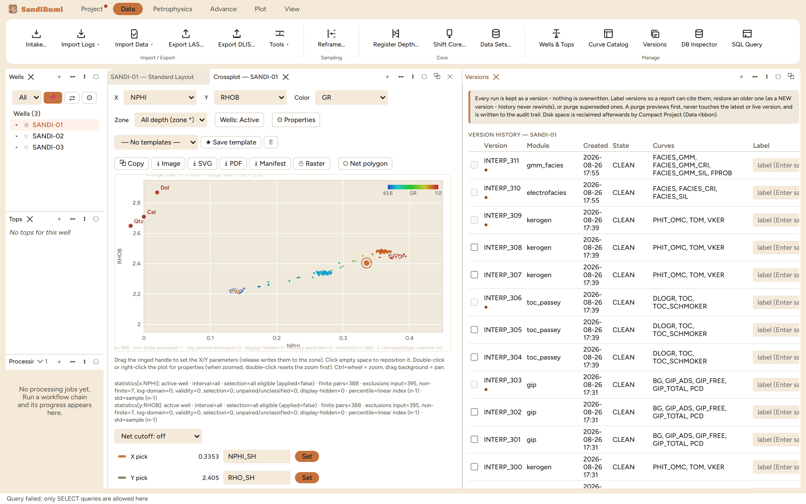

The Versions pane is the run history of a well's interpretation. Its
contract is stated at the top of the pane, in full:
Every run is kept as a version - nothing is overwritten. Label versions so
a report can cite them, restore an older one (as a NEW version - history
never rewinds), or purge superseded ones. A purge previews first, never
touches the latest or live version, and is written to the audit trail. Disk
space is reclaimed afterwards by Compact Project (Data ribbon).
Reach for it to answer "what did this curve look like before that
re-run", to label the version a report cites, or to reclaim space from a
long parameter-tuning session.
The pane

The example well's history: every module run is a numbered
INTERP version with its module, timestamp, outcome state and the curves
it wrote; the label field is where a citable name goes.
Each row is one run: version number, the module that produced it, when,
its outcome state (CLEAN on every row here; a degraded run is marked),
and the curve names it wrote.
Restore is append-only. Restoring an older version writes it as
a new version at the top of the history; nothing rewinds, so the
sequence of what happened is never editable after the fact.
Labels are for citation. A report that says "final deliverable,
version FINAL-2026Q3" names a labelled version, and the label survives
later runs.
Purge has guard rails: it previews what would go, refuses the
latest and the live version, and writes itself to the audit trail. The
file only shrinks after Compact Project, because the database never
shrinks on delete alone.
Step by step
Open Data ▸ Versions with the well selected.
Label the version a deliverable will cite; restore an older version
when a re-run needs to be undone (remembering the restore is itself a
new version).
After a heavy tuning session, select the superseded versions, review
the purge preview, confirm, then run Compact Project from the Data
ribbon to reclaim the space.
QC and pitfalls
Version numbers are evidence. The Curve Catalog shows which
version each curve's current values came from; if a plotted curve cites
v158 and the history's newest is v311, the plot is reading an older
surviving answer, which may be exactly right or worth a look.
Purge is not undo. Restore is the undo; purge permanently
discards superseded runs. The preview exists so the difference is seen
before it matters.
Module re-runs are re-runnable, not undoable. The Edit-menu
undo covers data and UI edits; interpretation history lives here, as
versions.